<!DOCTYPE html>
<html lang="en">
  <head>
    <meta charset="utf-8" />
    <meta name="viewport" content="width=device-width, initial-scale=1.0, maximum-scale=1.0, user-scalable=no" />

    <title>Southern Ireland Repeater Network</title>
    <link rel="stylesheet" href="./css/reveal.css" />
    <link rel="stylesheet" href="./css/theme/black.css" id="theme" />
    <link rel="stylesheet" href="./css/highlight/zenburn.css" />
    <link rel="stylesheet" href="./css/print/paper.css" type="text/css" media="print" />

  </head>
  <body>
    <div class="reveal">
      <div class="slides"><section  data-markdown><script type="text/template">
<!-- 1920x1080 is 16:9 -->
<!-- 1600x900 is 16:9 -->
<!-- JR's laptop is 1920x1200 -->

<!-- .slide: data-background="images/Map_10_EI2WRC_70cm_EI7MLR_70cm_EI2ECR_2m_EI7FXR_70cm_EI2DBR_2m_EI7MHR_70cm_EI7HXR_70cm.JPG" -->

# Southern Ireland Repeater Network

John Ronan, EI7IG & John McCarthy, EI8JA
</script></section><section ><section data-markdown><script type="text/template">
<!-- .slide: data-background="images/Digital_Total_Coverage.png" -->

## Southern Ireland Repeater Network - Early Days
* EI2WRC - 145.650 was installed in Mt. Leinster sometime in the early 1980s
* Previously at Portlaw (we believe)
* Earlier repeater was completely homebrewed by Egidio EI9EQ
* The Wacom WP-641 duplexer was purchased in 1981
* Date on the Hamtronics REP100 repeater boards: 1988
</script></section><section data-markdown><script type="text/template">
## EI2WRC - 1999

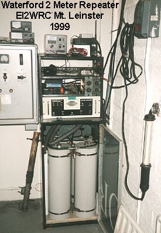
</script></section><section data-markdown><script type="text/template">
## EI2WRC - Original Antennas, 1998


<aside class="notes"><ul>
<li>Radio structures End fed dipole (2m on top)</li>
<li>Radio Structures End fed folded dipole (70cms)</li>
</ul>
</aside></script></section><section data-markdown><script type="text/template">
## EI2WRC - Ice on the Antennas, 1999

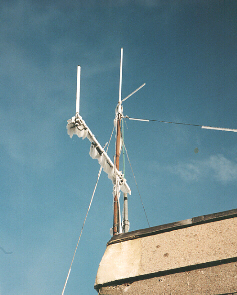

<aside class="notes"><ul>
<li>Watson 50 (2m on top)</li>
<li>Radio Structures End fed folded dipole (70cms)</li>
</ul>
</aside></script></section><section data-markdown><script type="text/template">
## EI9DDB - Gates of Mt Leinster, 1999


</script></section><section data-markdown><script type="text/template">
## EI9DDB - On site

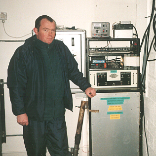
</script></section><section data-markdown><script type="text/template">## EI2WRC - Coverage Map


</script></section></section><section ><section data-markdown><script type="text/template">
## EI2WRC - Carrickphierish
* EI2WRC - 433.275 was installed around 1990/1991
* Cross-band link to Mt. Leinster to improve coverage of 2m repeater in the Waterford City Area
* Homebrewed system consisting of two cross-band repeaters and used two Diamond X-300 Antennas
</script></section><section data-markdown><script type="text/template">## EI2WRC - Carrickphierish

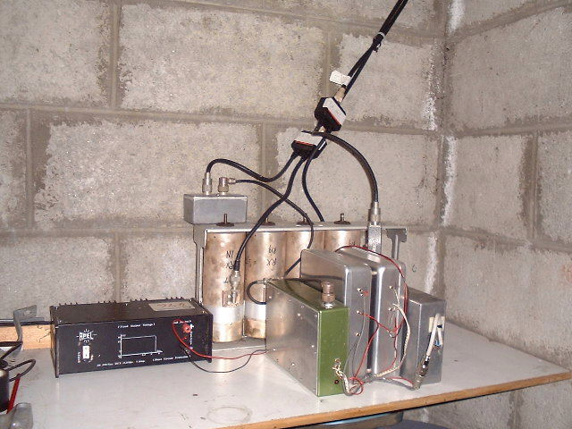

</script></section><section data-markdown><script type="text/template">## EI2WRC - System coverage map

</script></section></section><section  data-markdown><script type="text/template">
## Changing of the guard
* 1998, John, EI8JA took over as repeater keeper of EI2WRC 2m and 70cm linked repeaters
* The antenna maintenance at Mt. Leinster had been previously carried out by Kieran EI9DHB and Ken EI9EY who is now SK. 
 </script></section><section ><section data-markdown><script type="text/template">
## Team expansion
* In July 2003 discussions took place between John EI8JA and Neil EI3JE
* Neil was looking to site a 2m repeater he had just built
* EI8JA suggested the site at Faha (Helvick Head) that had previously been used for packet radio nodes
* Permission to use the site was sought and granted and the EI2ECR 145.675 (now EI2HHR) repeater was installed on August 10th 2003
  * ECR stands for East Cork Repeater
  * Licenced by EI7M 
</script></section><section data-markdown><script type="text/template">
## EI2ECR - Helvick Head Repeater

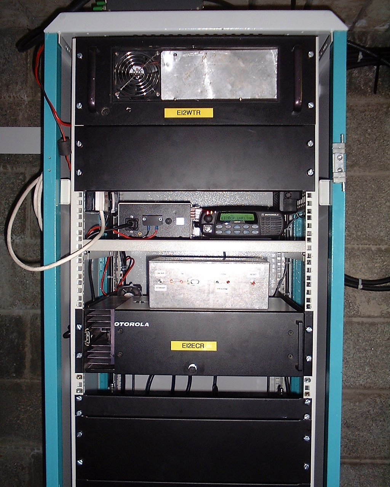

<aside class="notes"><ul>
<li>EI2WTR - Waterford Television Repeater (1290MHz)</li>
</ul>
</aside></script></section><section data-markdown><script type="text/template">
## Helvick Head - Installation Crew

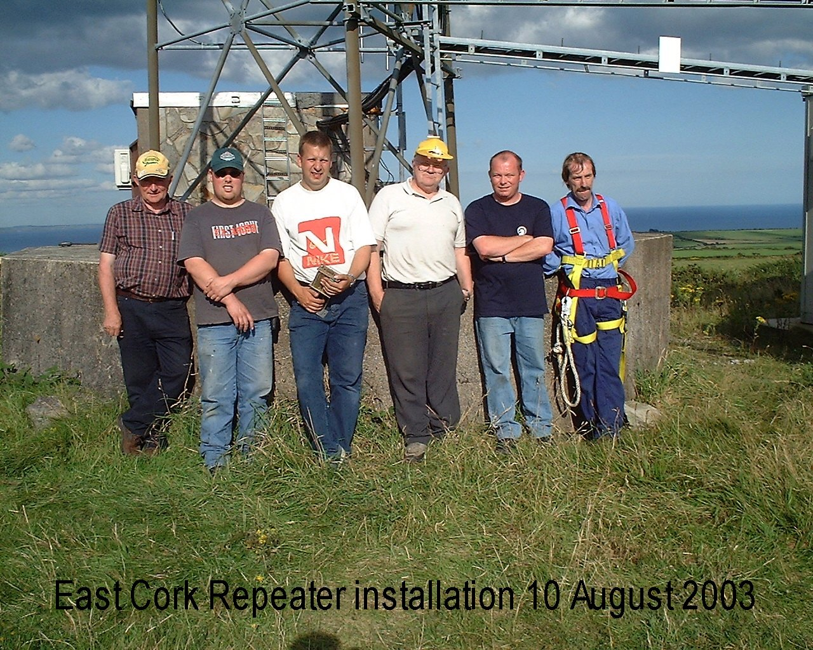

<aside class="notes"><ul>
<li>EI8IG behind the camera (I think)</li>
</ul>
</aside></script></section><section data-markdown><script type="text/template">
## Helvick Head - Current installation


<aside class="notes"><ul>
<li>Link to Mt. Leinster</li>
<li>Repeater</li>
<li>APRS</li>
<li>Link to Mullaghanish</li>
</ul>
</aside></script></section><section data-markdown><script type="text/template">## EI2WRC and EI2ECR coverage map


</script></section></section><section ><section data-markdown><script type="text/template">
## EI7MLR - 70CMS Analogue Repeater - Mt. Leinster
* 2002, Intermod issue appeard with new Commercial Radio Station
* Because Mt. Leinster had such great coverage on 2m it was decided to do some site tests in 70cms 
  * Tested recently adopted 70cms 7.6 MHz wide split channels 
  * 430.950 +7.6 MHz (RU76) chosen testing frequency
  * 3 Months testing
* Full licence applied for and EI7MLR, 430.950 was officially on-air from December 2003
* It was also linked and this saw 4 repeaters successfully connected together

<aside class="notes"><ul>
<li>Repeater was moved to Templetown &#39;temporarily&#39;</li>
<li>Intermod issues still exist today</li>
</ul>
</aside></script></section><section data-markdown><script type="text/template">
## EI7MLR - Original Installation

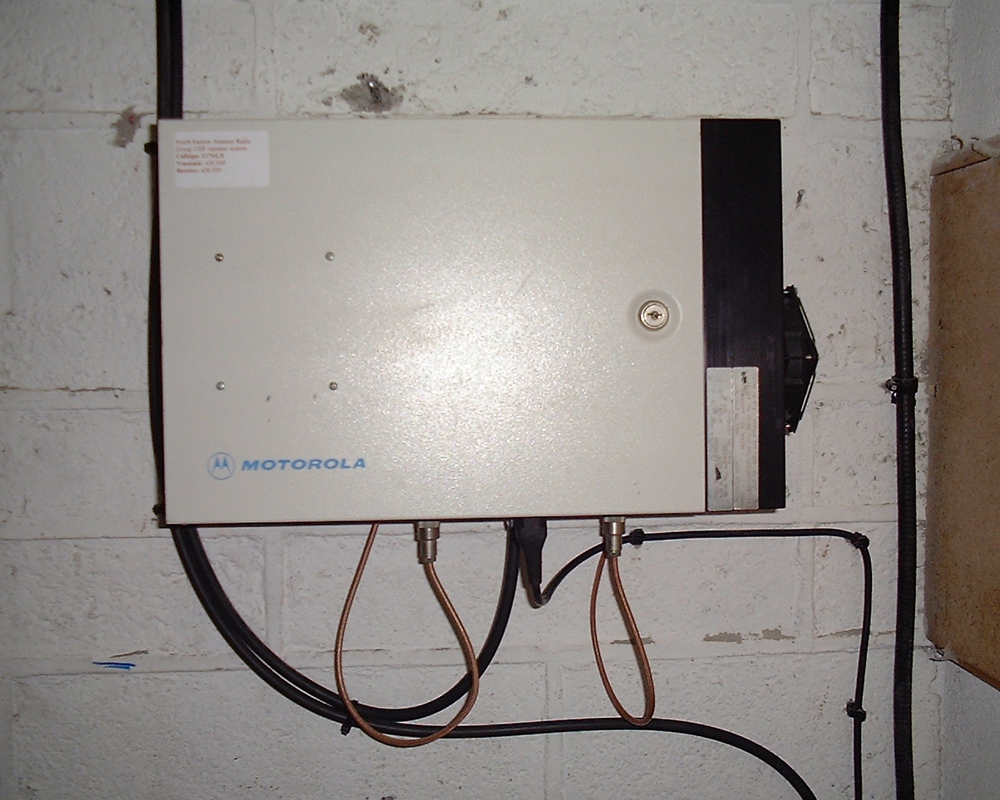

<aside class="notes"><ul>
<li>Currently in storage in EI7IG&#39;s Garage</li>
</ul>
</aside></script></section><section data-markdown><script type="text/template">## EI2WRC, EI2ECR and EI7MLR coverage map


</script></section></section><section ><section data-markdown><script type="text/template">
## EI2ECR - 70CMS Analogue Repeater - Cork City 
* Improve Coverage in Cork City Area
* Another wide split repeater was put into service in Farmers Cross
  * February 2004
  * 430.900 +7.6MHz
  * Linked to EI2ECR (Helvick Head)
  * Changed to EI7FXR in 2007 (ComReg)
* 5 Repeaters now linked 
</script></section><section data-markdown><script type="text/template">
## EI7FXR - Mast at farmers cross

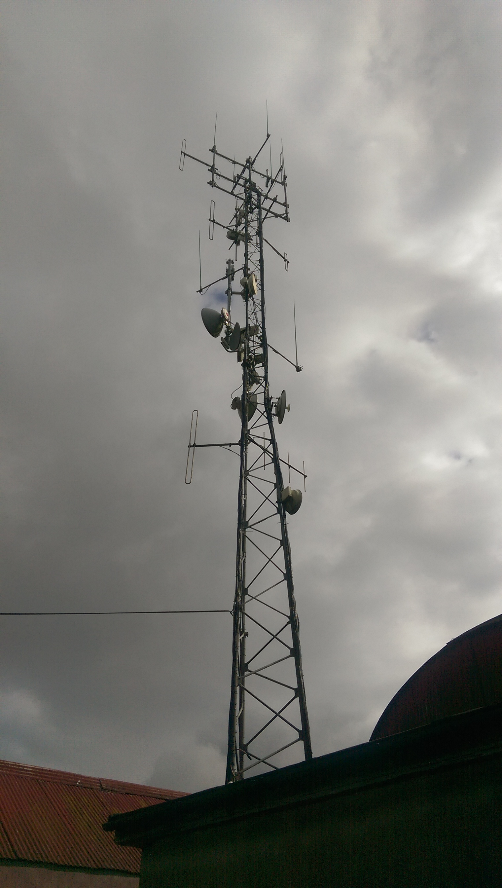
</script></section><section data-markdown><script type="text/template">
## EI7FXR - MTR2000 installed November 2016

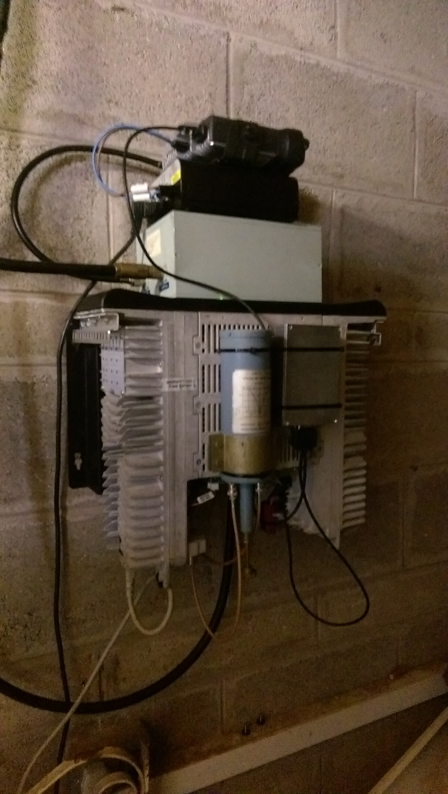

</script></section><section data-markdown><script type="text/template">## EI2WRC, EI2ECR, EI7MLR and EI7FXR coverage map

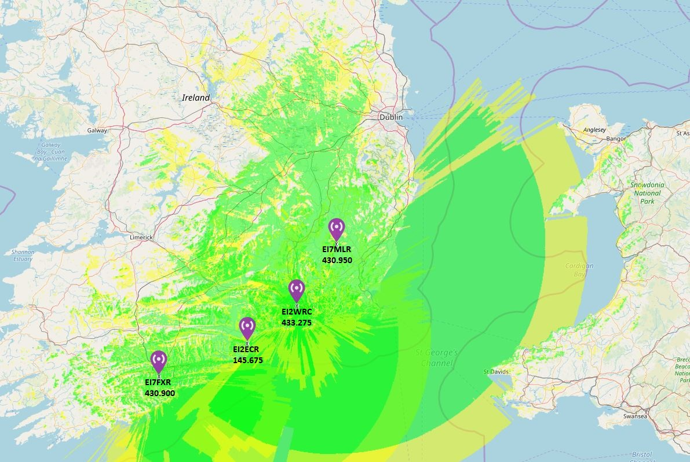
</script></section></section><section ><section data-markdown><script type="text/template">
## EI2DBR - (EI2WRC) The case of the moving repeater

* New site at Ridge of Capard found
  * Moved from temporary location at Templetown in Co. Wexford on Saturday the 19th of June 2004.
* Site proved very successful
  * pushed the coverage of the network further North and into parts of Co. Dublin. 
  * Changed to EI2RCR in 2007 (ComReg) 
* Site owner change forced relocation
  * Moved to Devils Bit 9th April 2012 (EI2DBR)
    * Replaced APRS Digipeater on the site
    * Largest land coverage of all repeaters in the Network

<aside class="notes"><p>Need to explain why a new Site was needed</p>
</aside></script></section><section data-markdown><script type="text/template">

## EI2DBR - (EI7RCR) Ridge of Capard Repeater Antenna

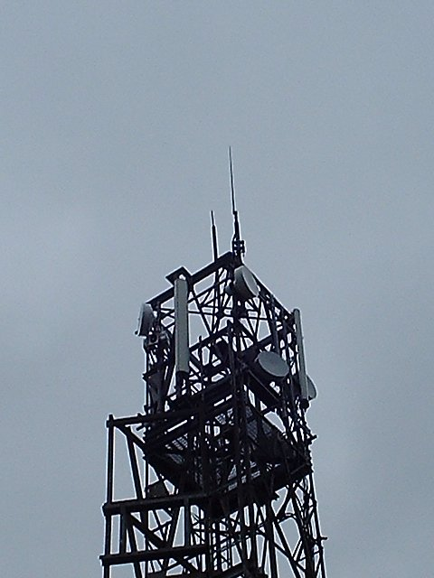

</script></section><section data-markdown><script type="text/template">

## EI2DBR - (EI7RCR) Ridge of Capard Repeater Installation

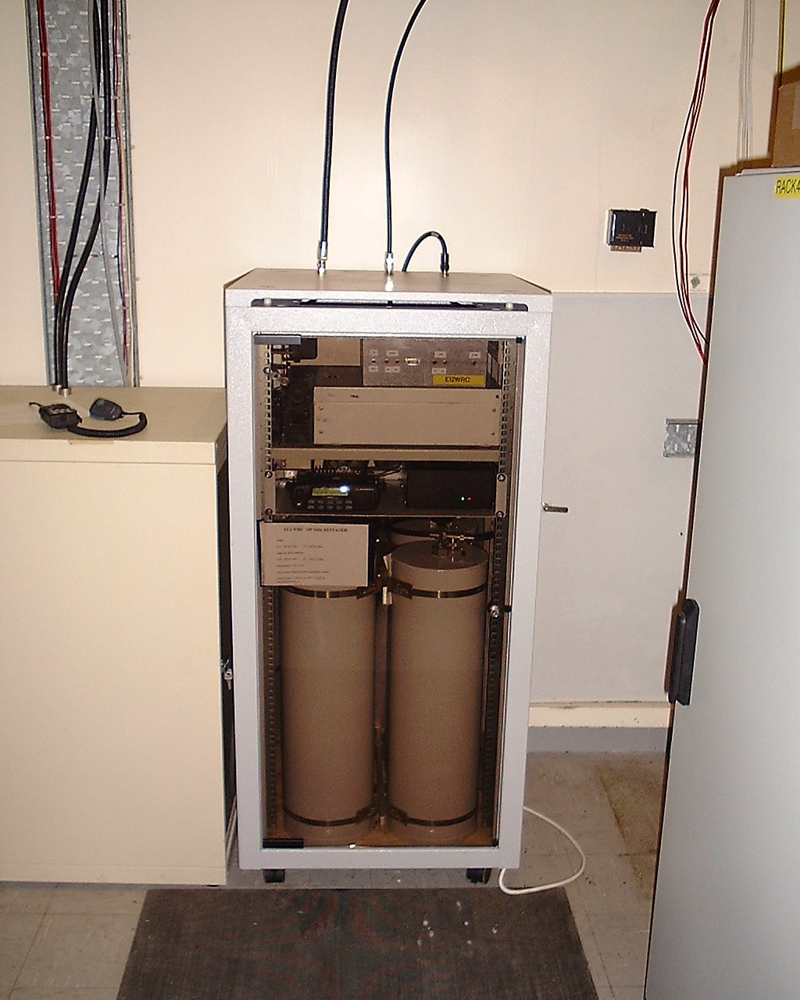

</script></section><section data-markdown><script type="text/template">## EI2WRC, EI2ECR, EI7MLR, EI7FXR and EI2RCR coverage map

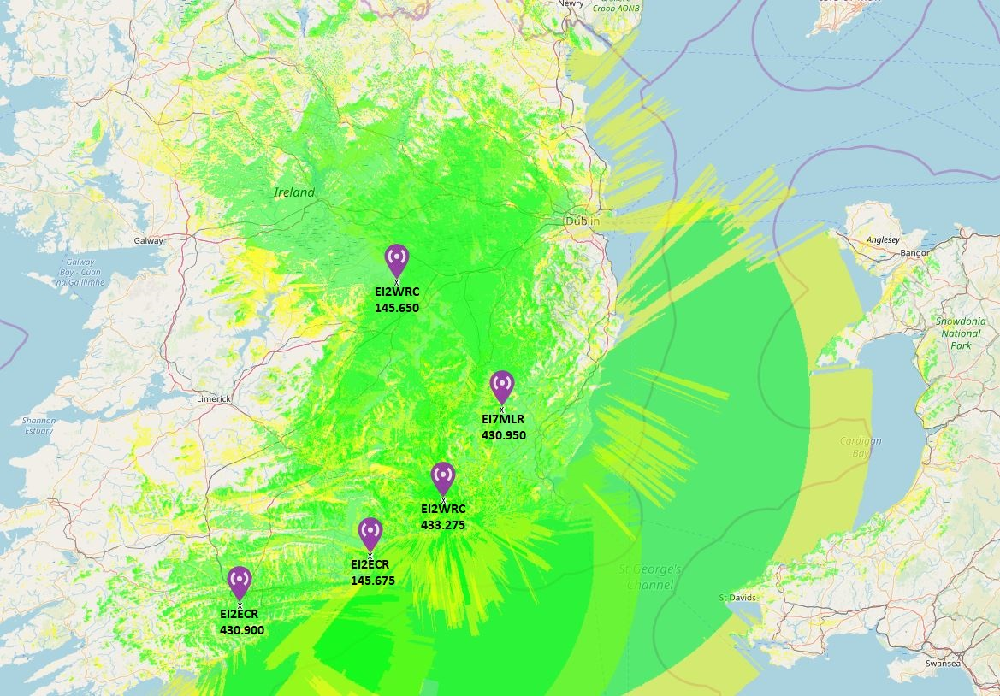
</script></section><section data-markdown><script type="text/template">

## EI2DBR - Mast at Devil's Bit

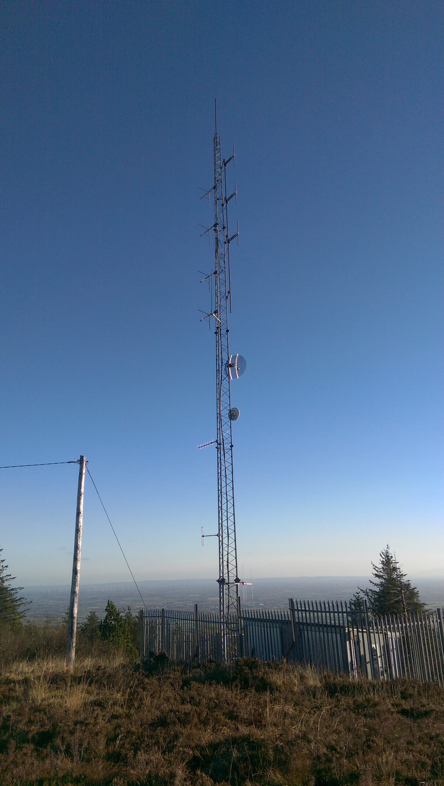
</script></section><section data-markdown><script type="text/template">

## EI2DBR - Repeater at Devils Bit

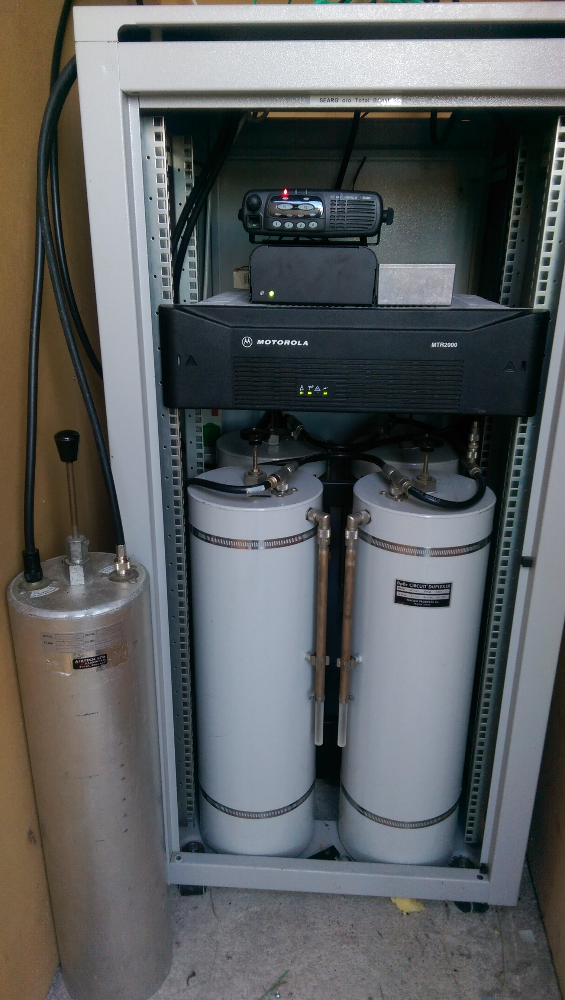
</script></section><section data-markdown><script type="text/template">## EI2WRC, EI2ECR, EI7MLR, EI7FXR and EI2DBR coverage map

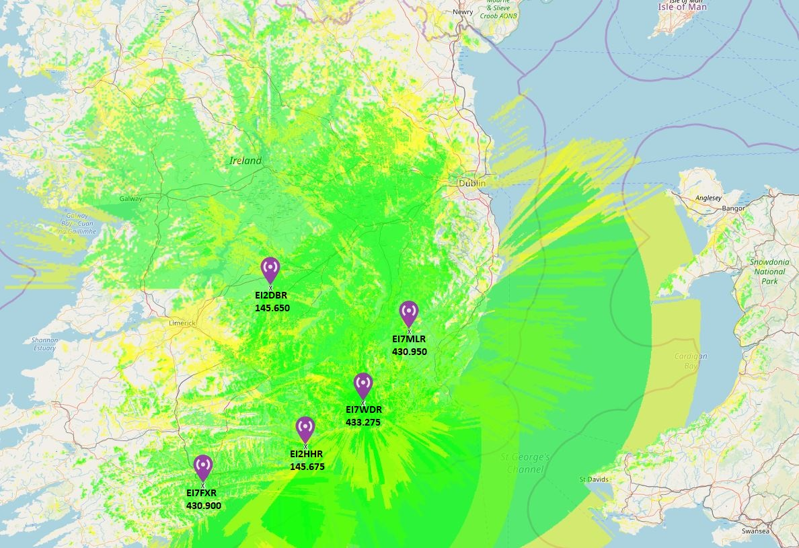

</script></section><section data-markdown><script type="text/template">
## Coverage map comparison


</script></section></section><section ><section data-markdown><script type="text/template">
## Internet Radio Linking Project (IRLP)

* June of 2004 it was decided to try IRLP which stands for Internet Radio Linking Project 
* IRLP was designed by David Cameron VE7LTD and uses Voice-Over-IP (VoIP) running under the Linux operating system to allow linking of repeaters over the Internet
* Interface board ordered and interfaced with a Pentium 166 PC and a Motorola GM360 UHF radio
* Gateway was issued with the number 5883 and was added to the repeater system on 21st of June 2004
  * First IRLP node in EI. It is still operational today
  * The only change made was the replacement of the Pentium PC with a much smaller Raspberry Pi computer
</script></section><section data-markdown><script type="text/template">

## IRLP - Interface Board


</script></section><section data-markdown><script type="text/template">

## IRLP - Interface Board in situ (Underneath WIT APRS Igate)


</script></section></section><section ><section data-markdown><script type="text/template">
## EI7WDR - (EI2WRC) Carrickphierish upgrade

* September 2004
  * Decision made to upgrade the 70cm repeater system at Carrickphierish Waterford City
  * Purpose was to make it a standalone unit 
    * it was cross banded to the 145.650 MHz repeater and depended on it to function
    * if EI2WRC went down so did it 
  * 10 watt Motorola MC Compact was fitted with a NHRC controller
    * allowed stand-alone operation as well as linking to the network
* New system was installed October 25th 2004
  * Changed to EI7WDR in 2007 (ComReg) 
  * Still in operation today but there are plans to upgrade it this year

<aside class="notes"><ul>
<li>Frequency Change </li>
<li>Antenna and feeder replacement</li>
<li>Addition of digital repeater on the same site</li>
</ul>
</aside></script></section><section data-markdown><script type="text/template">
## EI7WDR - New Repeater 2004

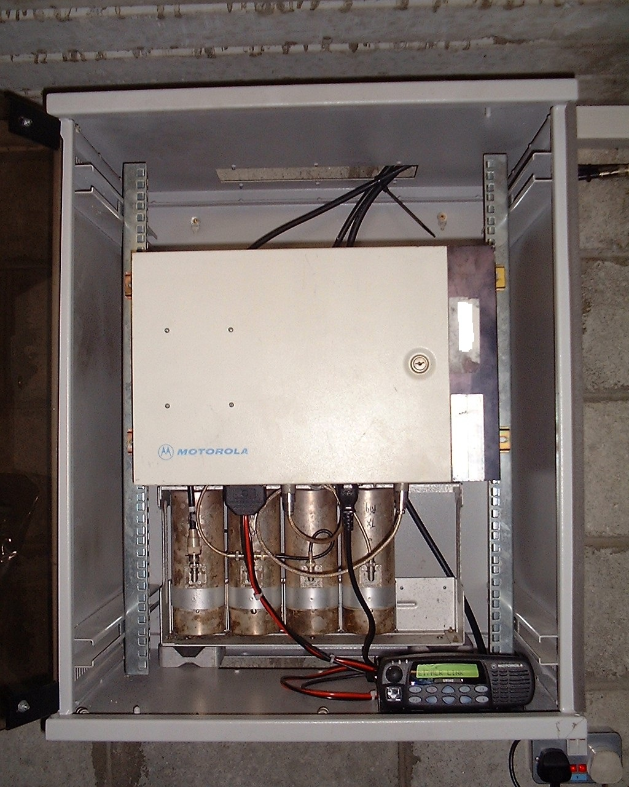
</script></section><section data-markdown><script type="text/template">
## EI7WDR - Present day


<aside class="notes"><ul>
<li>Filters now mounted horizontally</li>
<li>APRS Digi also installed</li>
</ul>
</aside></script></section></section><section ><section data-markdown><script type="text/template">
## EI7BWR - Extending Coverage

* New project, a high site near Bweeng in North Cork
  * The frequency chosen for this repeater was 430.875 +7.6 MHz (RU70) 
  * Applied for and approved by repeater coordination group
  * Licence for EI7BWR was granted
* Installation took place on 22nd March 2014
  * This improved coverage in North Cork and into parts of Limerick 
  * This brought the number of repeaters on the network to 6
* EI7BWR was in service for two years when the sale of the site forced move
* Fortunately an alternative site was offered to the group at Mullaghanish on the Cork Kerry border
  * After some tests the repeater went into service from the new site using the callsign EI7MHR in October 2017
* Higher location, improved coverage
  * Now covered parts of Kerry/West Cork and into Limerick that previously had no access to the network. 
</script></section><section data-markdown><script type="text/template">
## EI7BWR - Mast at Bweeng

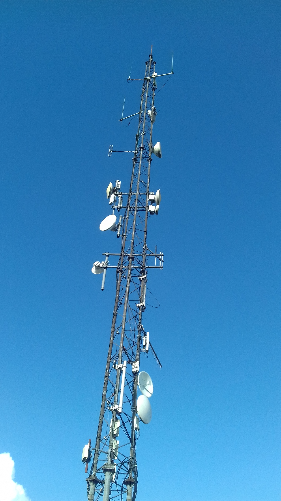
</script></section><section data-markdown><script type="text/template">
## EI7BWR - Initial Repeater

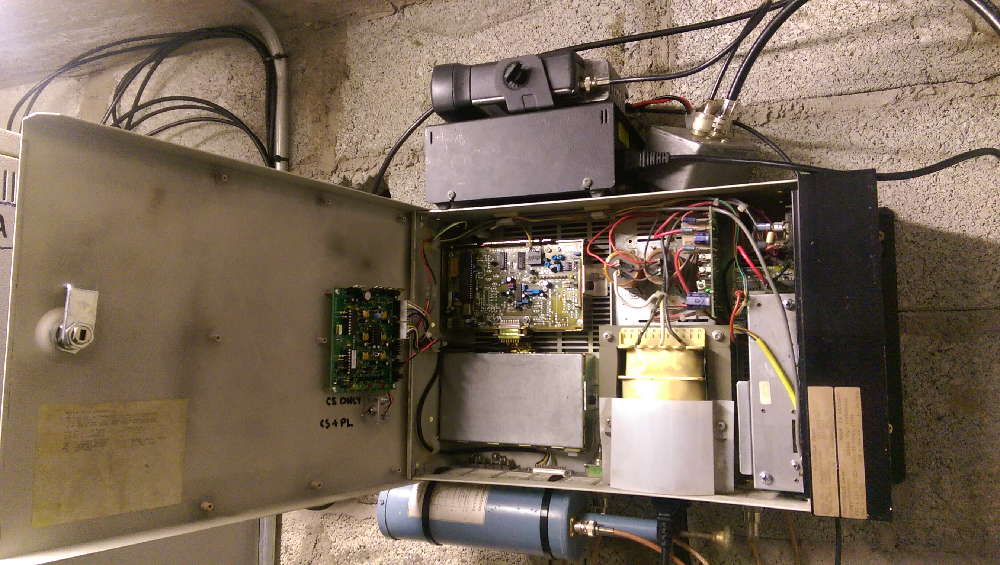


</script></section><section data-markdown><script type="text/template">
## EI7BWR - MTR2000 upgrade

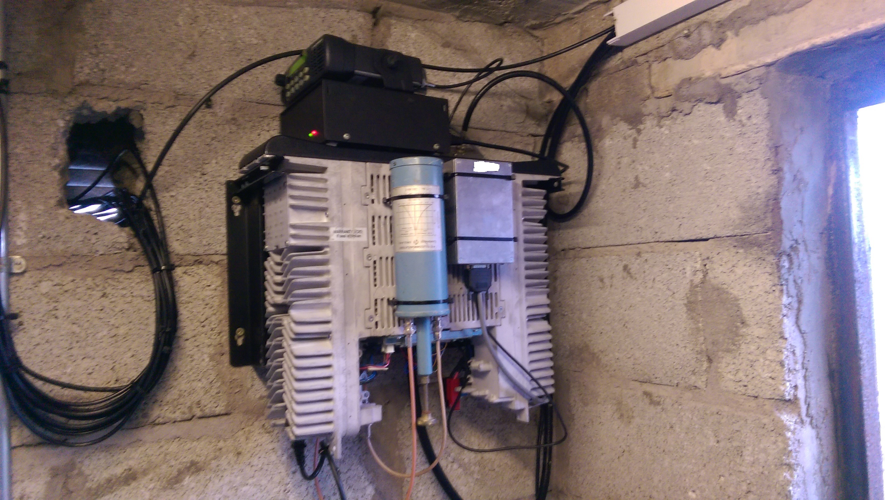
</script></section><section data-markdown><script type="text/template">
### EI7WDR, EI2HHR, EI7MLR, EI7FXR, EI2DBR and EI7BWR coverage map

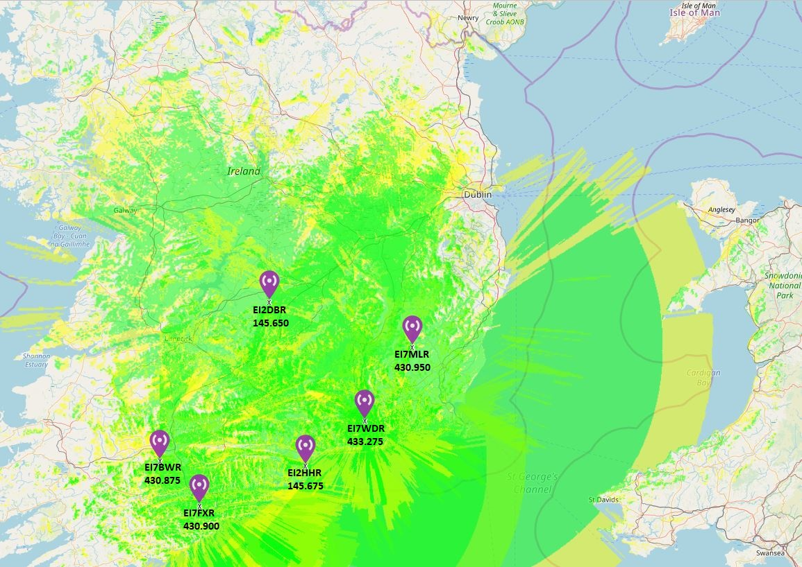
</script></section><section data-markdown><script type="text/template">
### EI7WDR, EI2HHR, EI7MLR, EI7FXR, EI2DBR and EI7MHR coverage map

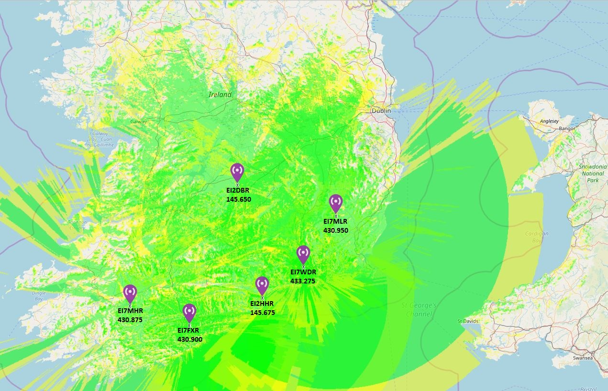
</script></section><section data-markdown><script type="text/template">
### Coverage map comparison


</script></section></section><section ><section data-markdown><script type="text/template">
## Southern Ireland Repeater Group Formation
#### winds of change

* The Southern Ireland Repeater Group was formed in April 2016
  * Goal was to further network development and to keep the network on the air
* SIRN and TARG commenced negotiations for repeater to cover Suir Valley/Clonmel/Cahir areas
  * Poor network coverage in area 
  * Agreement reached
    * TARG applied for licence
    * SIRG to build and supply the equipment
* EI7HXR on 430.850MHz was sought and granted 
* Sited at Harney's Cross on the Clonmel side of the Comeragh Mountains
* Commenced service on the 4th of December 2016
* Seventh repeater to link to the Southern Ireland Repeater Network

<aside class="notes"><ul>
<li>The antenna is actually Barravakeen</li>
</ul>
</aside></script></section><section data-markdown><script type="text/template">
## EI7HXR - Antenna at Harney's Cross

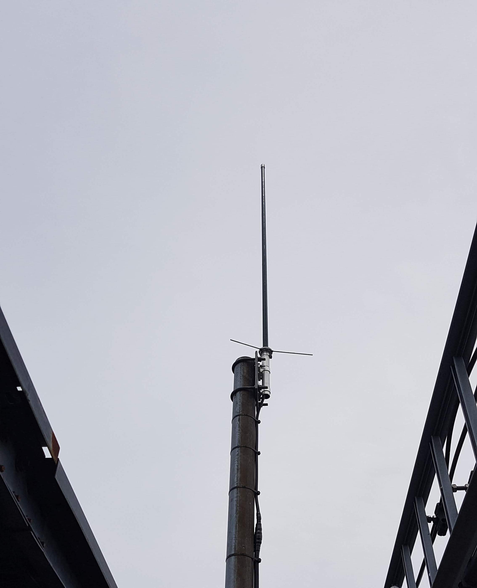

</script></section><section data-markdown><script type="text/template">
## EI7HXR - Repeater Installation

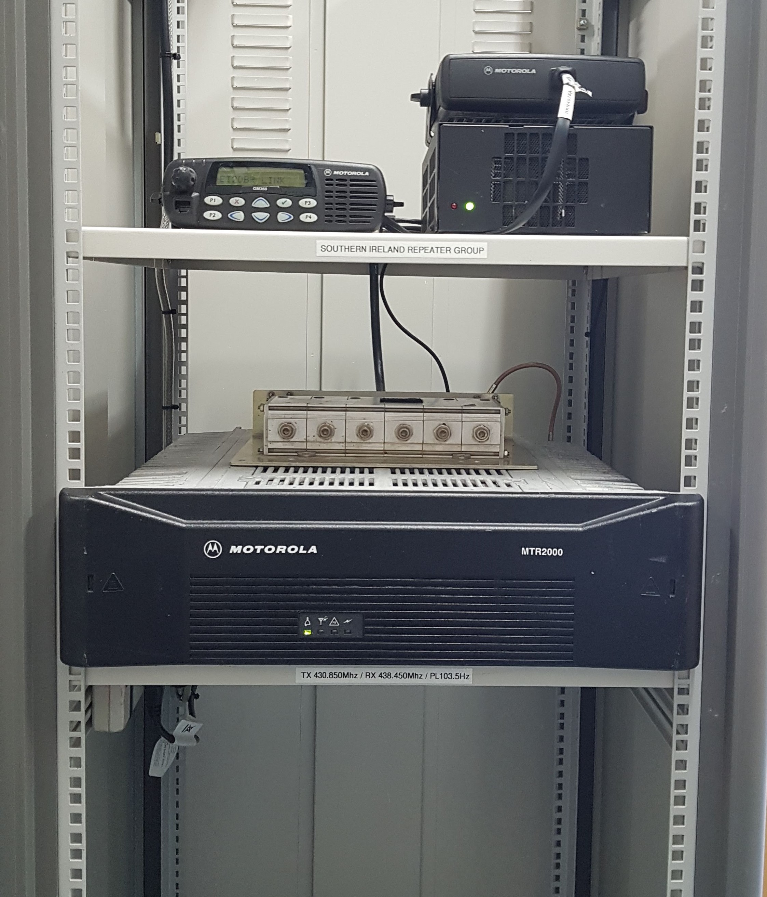
</script></section><section data-markdown><script type="text/template">
### Southern Ireland Repeater Network coverage map

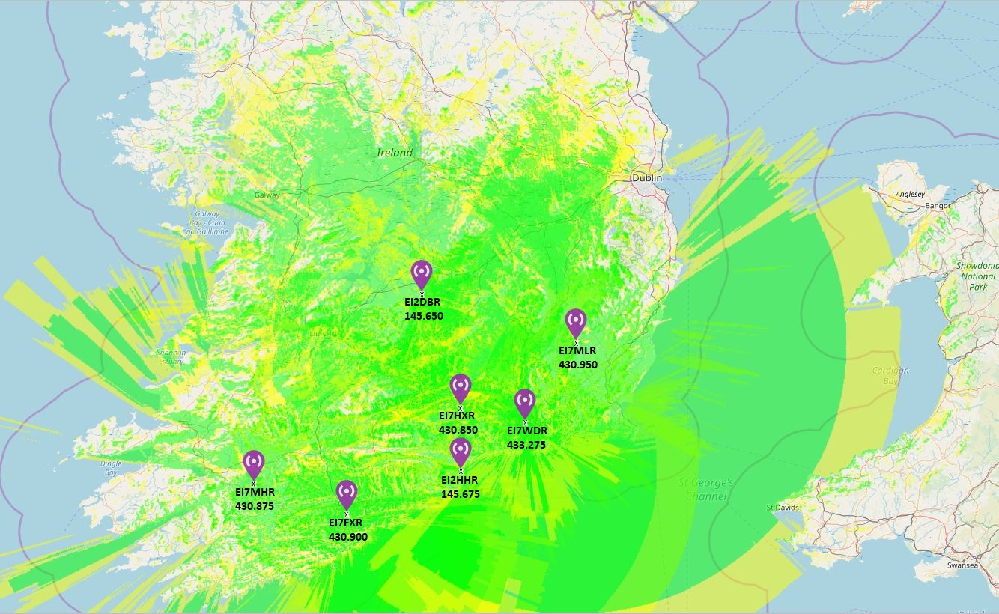

</script></section></section><section ><section data-markdown><script type="text/template">


## Other VoIP Modes
* In 2016 we expanded our VoIP gateway capability to include the Zello PTT application 
* Primary purpose to allow repeater keepers monitor the network remotely via PC and mobile phone 
* Initially it was restricted to a small group
 * Repeater was spotted on Zello directory
 * Requests for access started coming in looking for access
* August 2018 it was decided to make it available to all licenced amateurs
</script></section><section data-markdown><script type="text/template">
## November 2018 - Radio User Article

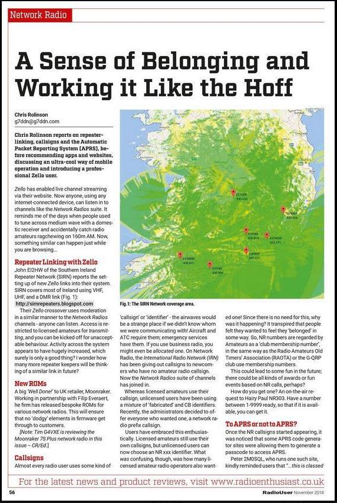

<aside class="notes"><ul>
<li>November 2018 Chris Rolinson G7DDN mentioned our Zello link to the network in his Radio User Article</li>
</ul>
</aside></script></section><section data-markdown><script type="text/template">
## December 2018 - Practical Wireless Article

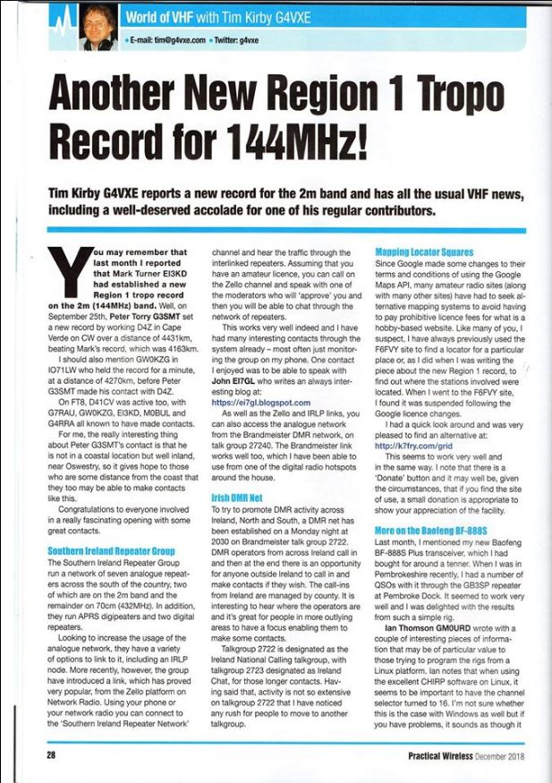

<aside class="notes"><ul>
<li>December 2018 of the same year Tim G4VXE featured us in his PW &quot;World of VHF&quot; article</li>
</ul>
</aside></script></section><section data-markdown><script type="text/template">
## Echolink - EI2SIRG-R

* Echolink added in 2019
* Adds to the level of activity on the repeater network 
* Node number 225431 is accessible via on all repeaters on the network
</script></section></section><section ><section data-markdown><script type="text/template">
## Digital - To boldly go where no one has gone before

* December 2016 a new challenge - a DMR Repeater
* MMDVM Seemed best option
  * Most modes supported
  * Ability to be interfaced to Motorola MTR2000
* Site with readily available broadband was offered in Co. Waterford
* Decided to order the boards and 'give it a go'
  * Raspberry Pi
  * Arduino Due with MMDVM Shield

<aside class="notes"><ul>
<li>First Repeater in 26 Counties on DMR and D-Star Networks</li>
</ul>
</aside></script></section><section data-markdown><script type="text/template">
## Refresher - What is MMDVM?
* Multi Mode Digital Voice Modem (MMDVM)
 * Firmware that runs on Some Arduino, and some ST Micro processors
 * Supports D-Star, DMR, System Fusion, NXDN, AX.25 and P25 Digital Voice modes
 * MMDVM Project started by G4KLX in 2015
   * Heritage going back to 2009 
   * Still under active development

* MMDVMHost
 * Software that interfaces to the MMDVM or DVMega on the one side, and a DMR network on the other 
 * It supports D-Star, DMR, NXDN, AX.25, P25 Phase 1, and System Fusion
   * On the D-Star side the MMDVMHost interfaces with the ircDDB Gateway
   * On DMR it can connect to BrandMeister, DMR+, HB Link, XLX or DMRGateway
     * DMRGateway can connect to multiple DMR networks at once
   * On System Fusion it connects to the YSF Gateway
   * On P25 it connects to the P25 Gateway
</script></section><section data-markdown><script type="text/template">
## Arduino Due with MMDVM Shield


</script></section><section data-markdown><script type="text/template">
## Repeater
##### Raspberry Pi, Arduino Due with MMDVM Shield, old Modem enclosure, MTR2000 
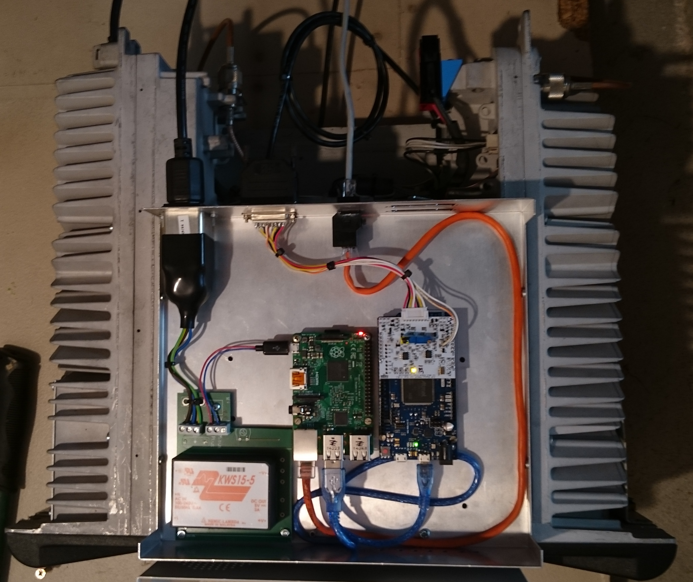


<aside class="notes"><ul>
<li>Enclosure that was recycled from an old modem and luckily its power supply was 5v at 3 amps which was ideal to run both the Pi and Arduino. </li>
<li>This is the reason EI8JA is now bald.</li>
</ul>
</aside></script></section><section data-markdown><script type="text/template">
## Setting RX Levels


<aside class="notes"><ul>
<li>Peak to Peak measurement no more than 3.28v</li>
<li>Error free operation</li>
</ul>
</aside></script></section><section data-markdown><script type="text/template">## Setting TX Levels

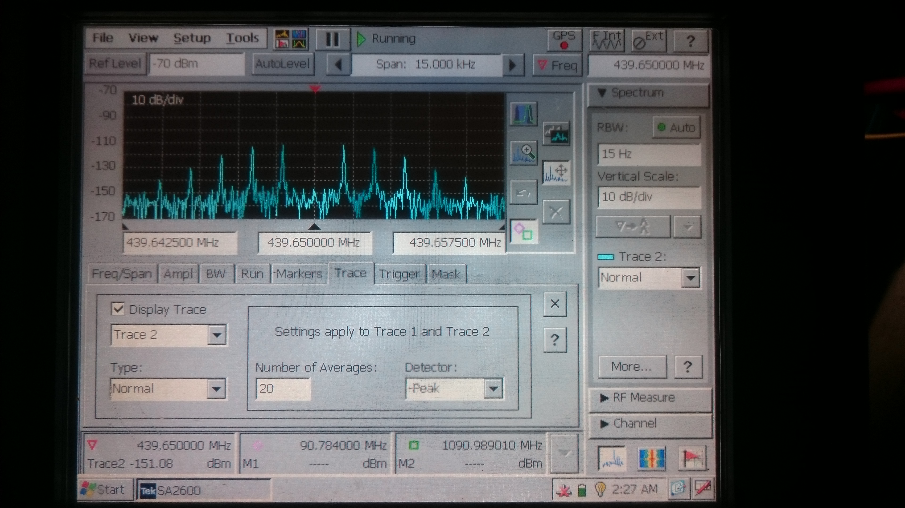


<aside class="notes"><p>What am I looking at?</p>
<p>It was then interfaced with the MTR2000 and after setting the TX &amp; RX levels and some trial and error it was up and running in DMR, DStar and Fusion modes.</p>
</aside></script></section><section data-markdown><script type="text/template">
## EI7CDD Repeater

### The Installation. July 28th, 2017

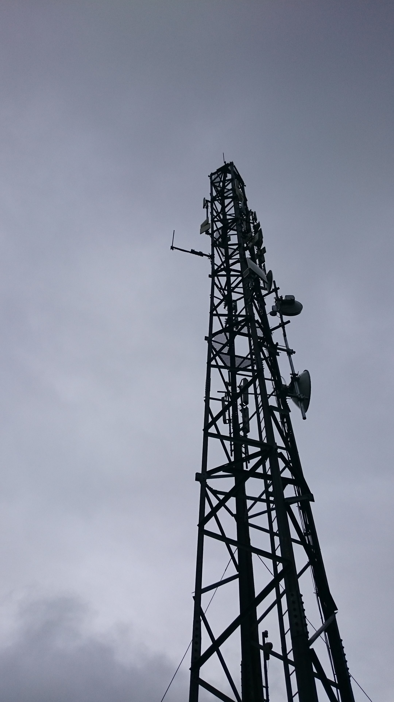

<aside class="notes"><p>The licence was then applied for and EI7CDD using one of the newly allocated 9 MHz split channels for digital voice on 70cm (DVU52 439.650 -9MHz) went into service from Carronadavderg, the highest point in the Drum Hills Co. Waterford at 301m ASL, on July 28th 2017 giving good coverage from Cork to Waterford from a vertical collinear antenna.</p>
</aside></script></section><section data-markdown><script type="text/template">## The Repeater in situ

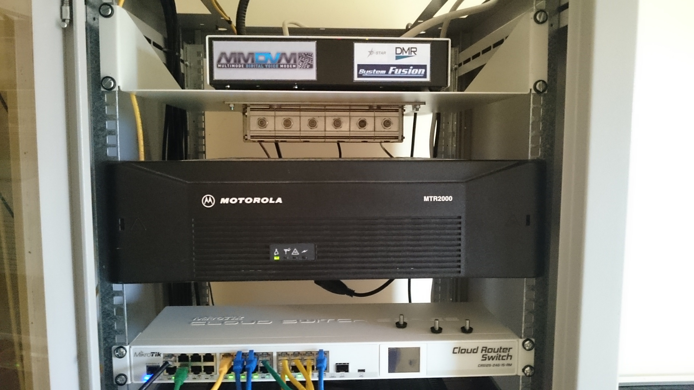


<aside class="notes"></aside></script></section></section><section ><section data-markdown><script type="text/template">## EI7WCD

* To improve coverage in Waterford City
*  Identical system to EI7CDD was built and set up at the (old) QTH of John EI7IG
  * Excellent coverage back into the City
* 439.875Mhz (DVU52 439.675 -9MHz) Approved 
* Installed February 18th 2018
  * EI7IG moved QTH June 2019
  * Operating from temporary location since
* Intention is to co-locate with EI7WDR in the City
  * Improved coverage from East Cork to Waterford City
  * Seamless roaming on enabled DMR Transcievers 
</script></section><section data-markdown><script type="text/template">## EI7CDD and EI7WCD predicted coverage

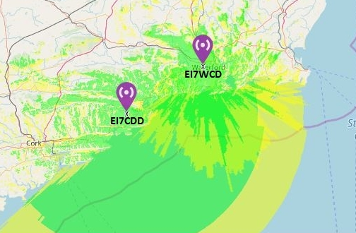
</script></section></section><section ><section data-markdown><script type="text/template">
## Digital on Mt. Leinster (EI7MLD)
* One of the highest sites in the country. Why not?
* Another MTR2000 pressed into service
* Frequency carefully selected to allow for co-location
  * 430.300 (DVU-R24 430.300 +9MHz) applied for and approved
* 3G/4G connection used (EI7IG)
* Installed 23rd March 2019
  * Initial teething problems
* Building move has posed problems
  * Currently on a 3G/4G connection (EI8JA)
  * Connection to Total Wireless was destroyed by falling Ice last winter

<aside class="notes"><ul>
<li>Need to solve the connection on Mt. Leinster</li>
<li>The coverage with all three repeaters combined covers East Cork, Waterford City, Kilkenny, Carlow and Kildare areas.</li>
</ul>
</aside></script></section><section data-markdown><script type="text/template">
## EI7CDD, EI7WCD and EI7MLD predicted coverage

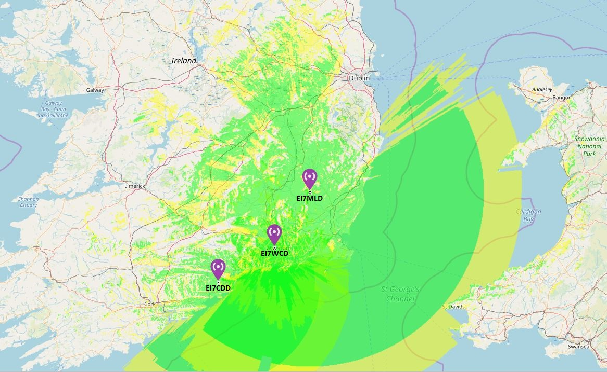
</script></section></section><section  data-markdown><script type="text/template">
## Contributors
* Francis Lenane EI9KT, Liam Grant EI8BLB, Olivier Vandenbalck EI8GQB/ON4EI, John McCarthy EI8JA, John Ronan EI7IG, Garreth Wilmott EI7FZB, Michael Brown EI4CN, Mark Kilmartin EI4FNB, Eoghan Kinnane EI5HBB, Nicky Madigan EI3JB, Neil Powell EI3JE, Hugh O'Donnell EI2HI   

Online contributors:
* Liam Grant EI8BLB, Rod Walsh EI7DF, John Desmond EI7GL, Eoghan Kinnane EI5HBB, John Kelly EI4L, Conor O'Neill EI4JN, Hugh O'Donnell EI2HI, Peter Kendall G7RPG, Wexford Wireless Club   
</script></section><section  data-markdown><script type="text/template">
<!-- .slide: data-background="images/Map_10_EI2WRC_70cm_EI7MLR_70cm_EI2ECR_2m_EI7FXR_70cm_EI2DBR_2m_EI7MHR_70cm_EI7HXR_70cm.JPG" -->

## Discussion
* APRS network not covered
* Future plans?
* Questions?
* Thanks for listening!

<aside class="notes"><ul>
<li>All equipment is now commercial surplus</li>
<li>Even had donation from Belgium!</li>
</ul>
</aside></script></section></div>
    </div>

    <script src="./js/reveal.js"></script>

    <script>
      function extend() {
        var target = {};
        for (var i = 0; i < arguments.length; i++) {
          var source = arguments[i];
          for (var key in source) {
            if (source.hasOwnProperty(key)) {
              target[key] = source[key];
            }
          }
        }
        return target;
      }

      // Optional libraries used to extend on reveal.js
      var deps = [
        { src: './plugin/markdown/marked.js', condition: function() { return !!document.querySelector('[data-markdown]'); } },
        { src: './plugin/markdown/markdown.js', condition: function() { return !!document.querySelector('[data-markdown]'); } },
        { src: './plugin/highlight/highlight.js', async: true, callback: function() { hljs.initHighlightingOnLoad(); } },
        { src: './plugin/zoom-js/zoom.js', async: true },
        { src: './plugin/notes/notes.js', async: true },
        { src: './plugin/math/math.js', async: true }
      ];

      // default options to init reveal.js
      var defaultOptions = {
        controls: true,
        progress: true,
        history: true,
        center: true,
        transition: 'default', // none/fade/slide/convex/concave/zoom
        dependencies: deps
      };

      // options from URL query string
      var queryOptions = Reveal.getQueryHash() || {};

      var options = extend(defaultOptions, {"margin":0.1,"width":1920,"height":1080,"minscale":0.1,"maxScale":1.5}, queryOptions);
    </script>


    <script>
      Reveal.initialize(options);
    </script>
  </body>
</html>
